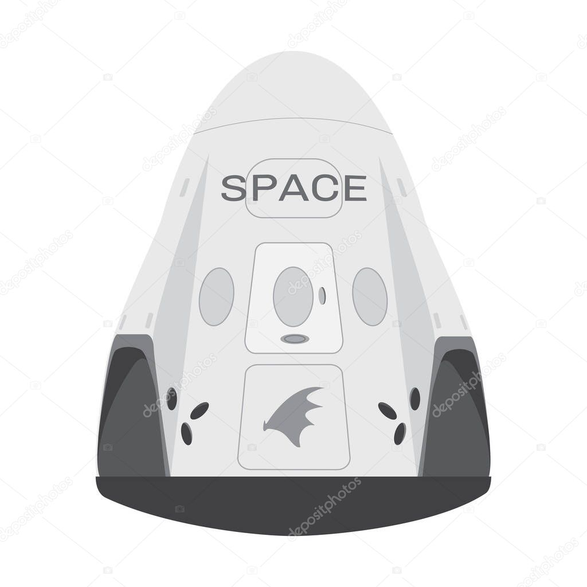

Hypperblog
Tu blog de confianza
Este es el título atractivo e interesante
Y este es el párrafo de inicio donde vamos a explicar las cosas incréibles que se pueden hacer con ramas

Log blogs son la mejor forma de compartir información y tus ideas. Muchos mas que ir a conferencias o salir en Youtube. Excepto si eres un rockstar. Pero estadisticamente no lo eres.... por ahora.
Suscribete y dale like